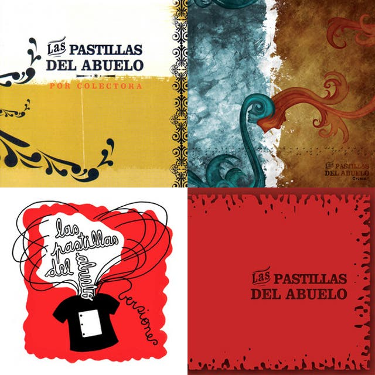
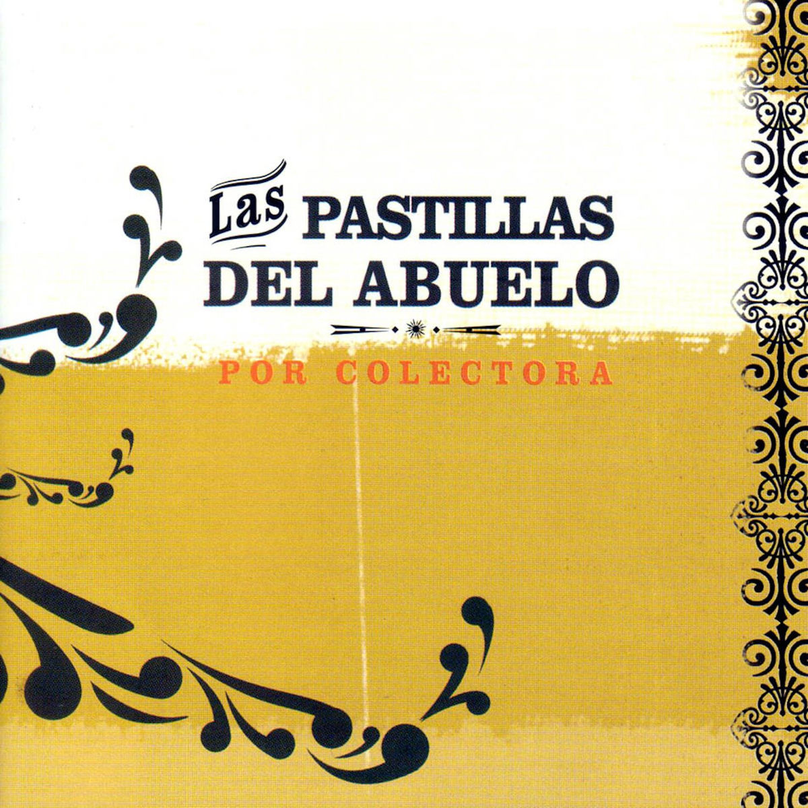

¿Quiénes son Las Pastillas del Abuelo?
Las Pastillas del Abuelo es una banda argentina de rock formada en Buenos Aires en el año 2002. Con el paso del tiempo, lograron construir una identidad musical propia y ganarse un lugar importante dentro del rock nacional.
Su música combina diferentes estilos como el rock, reggae, candombe y otros géneros populares. Sus letras suelen abordar temas relacionados con la vida cotidiana, las relaciones humanas, la sociedad y las experiencias personales.
Álbumes y lanzamientos
A lo largo de su trayectoria, la banda publicó numerosos discos que reflejan su evolución musical. Desde sus primeros trabajos independientes hasta sus producciones más recientes, cada álbum aporta una nueva etapa a su historia.
Entre sus lanzamientos más reconocidos se encuentran Por Colectora, Crisis, Desafíos y Paradojas, que contienen algunas de las canciones más representativas del grupo.


Por Colectora
Las Pastillas del Abuelo
Crisis
Desafíos
Paradojas
2020
Vínculos
Conciertos en vivo
Los recitales siempre fueron una parte fundamental de la identidad de Las Pastillas del Abuelo. A través de sus presentaciones, lograron construir una relación muy cercana con sus seguidores.
Durante su trayectoria se presentaron en importantes escenarios argentinos, como el Luna Park, y realizaron numerosas giras por el país y el exterior.